利用“复平面”（complex plane），可以将复数表示成图像的形式。复平面与代数中的 (x, y) 平面非常相似，不过y轴被虚轴代替，上面有0、±i、±2i等数字，如下图所示。
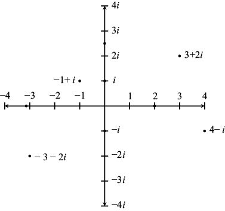
我在前文中说过，复数的加法、减法和乘法运算都非常简单。我们还可以把复数看作复平面上的点，然后进行几何运算。
例如，我们以下面这道加法题为例：
( 3 + 2i ) + (–1 + i ) = 2 + 3i
从下图可以看出，以点0、3 + 2i、2 + 3i和–1 + i为顶点的四边形是一个平行四边形。
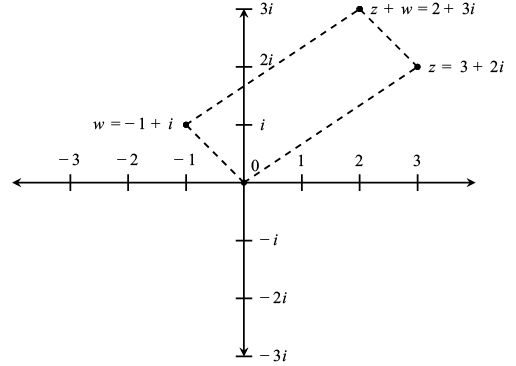
通常，我们在用几何方法进行复数z、w的加法运算时，可以如上图所示，通过画平行四边形的方式达到我们的目的。在进行 z – w 的减法运算时，可以如下图所示先画出点 – w，再进行点z与点–w 的加法运算。
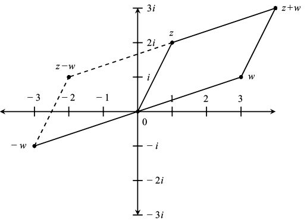
在用几何方法进行复数的乘法和除法运算时，首先需要确定它们的大小。我们把原点与点z之间线段的长度定义为复数 z 的“模”，记作| z |。具体来说，如果 z = a + bi，那么根据勾股定理：
| z | =
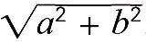
如下图所示，点3 + 2i的模为
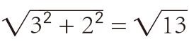
。注意，3 + 2i对应的角θ满足tanθ = 2/3。也就是说，θ = tan–1 2/3 ≈ 33.7°，约为0.588弧度。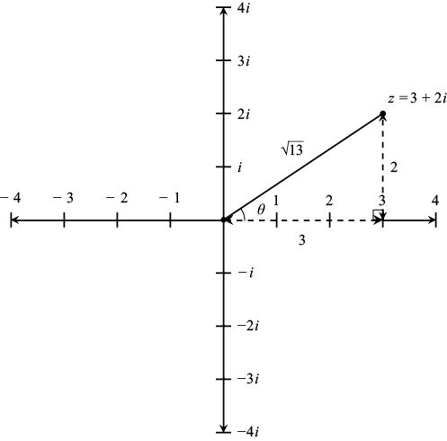
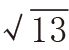
，角θ的正切函数tanθ = 2/3如果在复平面上画出模为1的所有点，如下图所示，就会得到一个单位圆。圆上的复数与角θ之间有什么关系呢？我们在第9章讨论过，笛卡儿平面上的这个点被记作 (cosθ, sinθ)。在复平面上，这个点变成cosθ + isinθ。同理，所有模为R的复数都可以写成：
z = R (cosθ + i sinθ)
我们把它称作复数的“极坐标形式”。也许现在告诉你为时尚早，但是到了本章结尾，你就会知道它还等于 Reiθ。（这算不算欧拉公式的“剧透”呢？）
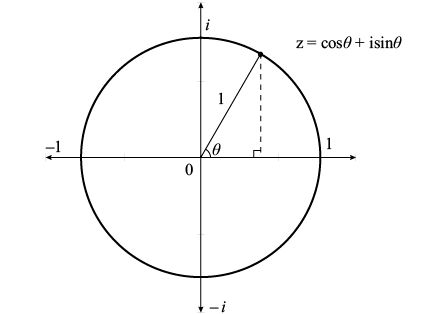
令人意想不到的是，复数可以进行乘法运算，模也可以进行乘法运算。
定理：如果z1、z2是复数，那么| z1z2 | = | z1 | | z2 |。换言之，乘积的模就是模的乘积。
证明：令z1 = a + bi，z2 = c + di，则| z1 | = ，| z2 | =
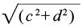
。因此：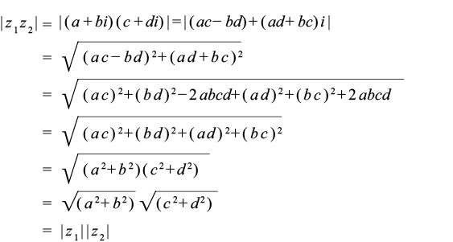
例如：
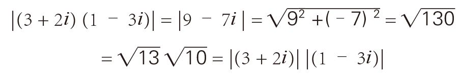
积对应的角是多少呢？复数 z 与x轴正方向构成的角常被记作arg z。例如，我们在前面计算过arg (3 + 2i) = 0.588弧度。同理，由于1 – 3i 位于第四象限，其对应的角θ满足tanθ = –3，因此arg (1– 3i) = arc tan (–3) = –71.56°= –1.249弧度。
请注意，(3 + 2i ) (1 – 3i ) = 9 – 7i 对应的角为arc tan (–7/9) = –37.87°= –0.661弧度，恰好等于0.588 + (–1.249)。但是，下面这条定理告诉我们，这其实并不是巧合！
定理：如果z1、z2是复数，那么arg (z1 z2 ) = arg ( z1 ) + arg ( z2 )。换言之，积的角就是角的和。延伸阅读中给出的证明需要用到上一章的三角恒等式。
证明：令复数z1、z2的模分别是R1和R2，对应的角分别是θ1和θ2，则z1、z2的极坐标形式分别是：
z1 = R1(cosθ1 + i sinθ1) z2 = R2 (cosθ2 + i sinθ2 )
因此：
z1z2 = R1(cosθ1 + i sinθ1 ) R2(cosθ2 + i sinθ2)
= R1R2[ cosθ1 cosθ2 – sinθ1sinθ2 + i(sinθ1cosθ2 + sinθ2 cosθ1)]
= R1R2 [cos (θ1 + θ2) + isin(θ1 + θ2)]
在运算过程中，我们利用了上一章的cos (A + B) 和sin (A + B) 这两个三角恒等式。从上面的证明可以看出，z1z2的模是R1R2（前面已经证明过），角是θ1 + θ2。证明完毕。 □
总之，复数相乘时，两数的模相乘，两数对应的角相加。例如，如果乘数是i，则模保持不变，角增加90°。注意，如果相乘的两个数字是实数，则正数的角为0°（或者说360°），负数的角为180°。两个180°的角相加，和为360°，这表明两个负数的乘积是正数。虚数的角为90°和–90°（或者270°）。因此，虚数自乘时，角必然是180°[因为90°+ 90°= 180°，或–90°+ （–90°） = –180°，–180°与180°没有任何不同]，乘积是负数。最后，请大家注意，如果z 的角为θ，那么1 / z的角就必然是 –θ。（为什么呢？因为 z×1/z = 1，所以z 与 1 / z 对应的角相加必然等于0°。）因此，复数进行除法运算时，只需对模进行除法运算，对角进行减法运算。也就是说，z1/z2的模是R1 / R2，角是θ1 – θ2。
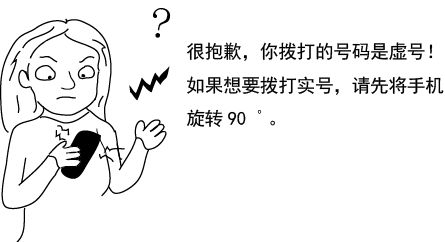